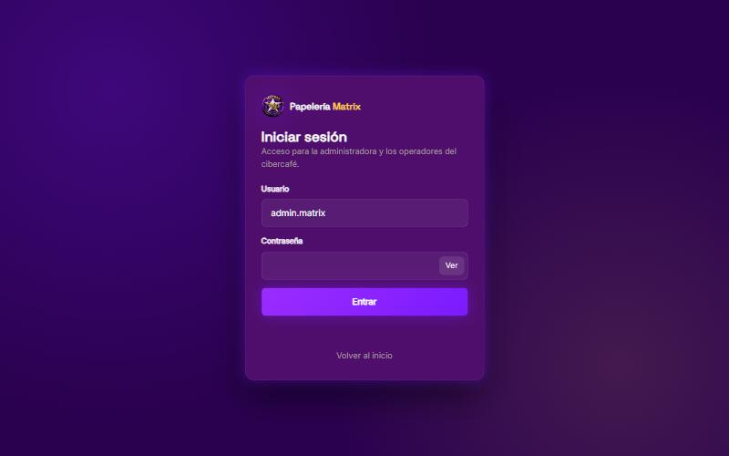
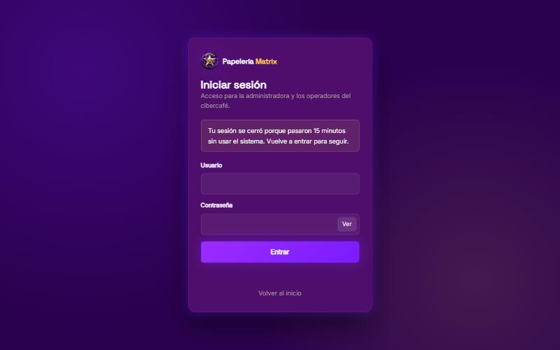
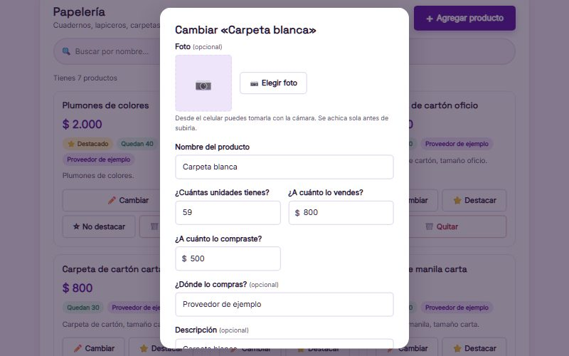
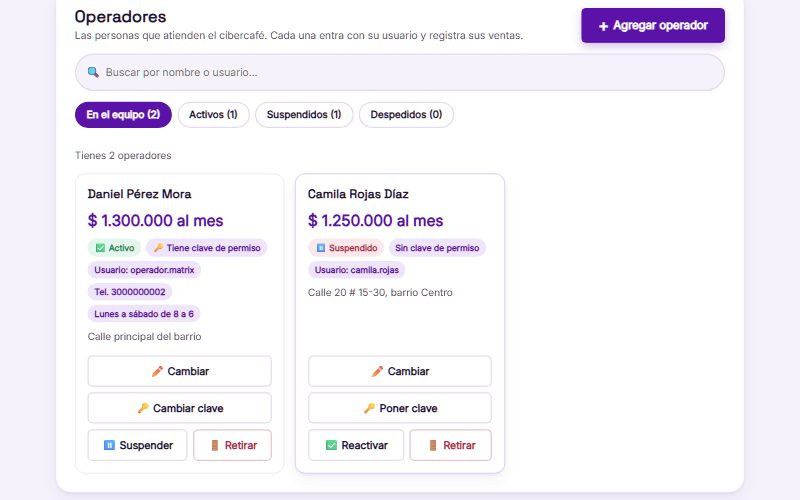
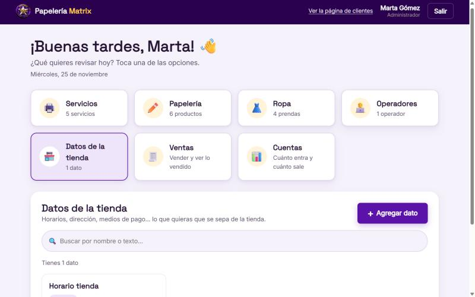
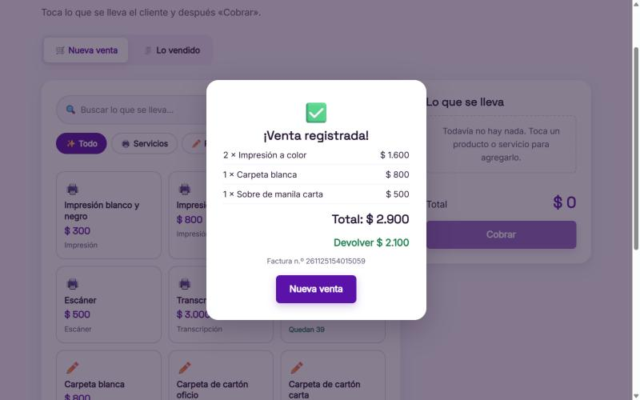
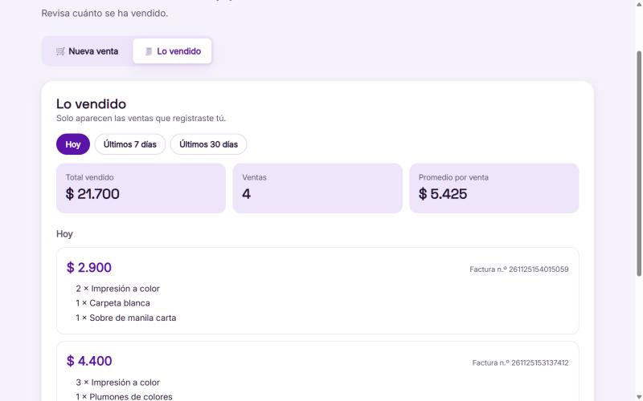
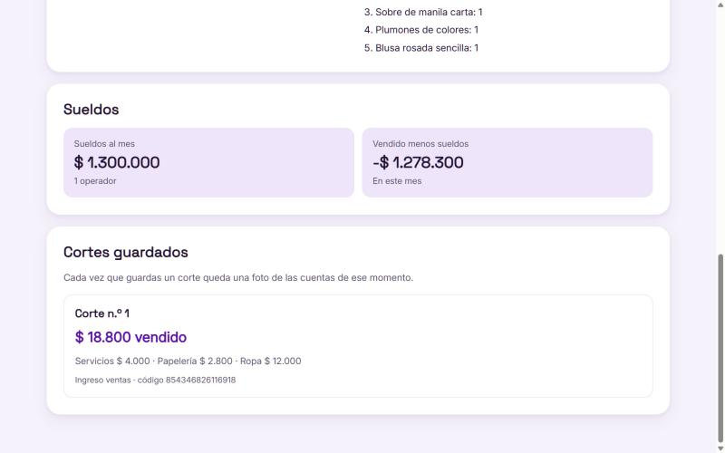
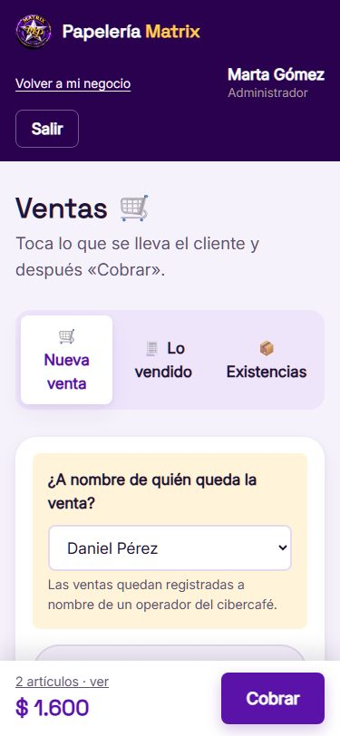

Papelería Matrix
Cómo usar el sistema: la página para los clientes, el panel de la administradora y la caja de ventas del cibercafé.
Versión 1.0 · 25 de noviembre de 2026
Equipo: Osvaldo De Jesús Pacheco Sanabria y Adrián Orozco
Dirección del sistema: https://papeleria-matrix-web.onrender.com
El sistema de Papelería Matrix tiene tres partes:
| Quién | Qué puede hacer |
|---|---|
| Cliente (sin entrar) | Ver el catálogo, buscar y leer los términos. |
| Operador del cibercafé | Vender en la caja, ver sus propias ventas y cuántas unidades quedan. |
| Administradora | Todo lo anterior, más el panel completo, ver todas las ventas, anularlas y ver las cuentas. |
Se abre con la dirección del sistema. Arriba está el menú (Inicio, Nosotros, Servicios, Papelería, Pulguero Glam y Contacto), la lupa para buscar en todo el catálogo y el botón Iniciar sesión, que es solo para el personal del negocio.
Los productos agotados y las prendas ya vendidas aparecen marcados. Los precios son los mismos que la administradora pone en el panel: si los cambia allá, cambian aquí. En «Horarios de atención» también aparece lo que la administradora guarde en «Datos de la tienda».

Para salir, toca Salir arriba a la derecha, junto a tu nombre. Hazlo siempre que dejes el computador.
Por seguridad, si pasan 15 minutos sin usar el sistema, la sesión se cierra sola. Al volver verás este aviso: solo tienes que entrar otra vez. Lo que ya estaba guardado no se pierde.

Al entrar, el panel saluda y muestra un mosaico por cada parte del negocio, con cuántos registros hay en cada una. Toca un mosaico para abrir esa sección.

Las tres secciones funcionan igual. Cada producto aparece en una tarjeta con su precio. En papelería, además, se ve cuántas unidades quedan: en verde si hay suficientes y en rojo cuando quedan menos de 5 o se agotó.

1500 o 1.500.Toca Cambiar en la tarjeta. Se abre el mismo formulario con los datos actuales, incluidas las unidades y el precio de compra. Cambia lo que necesites y toca Guardar. Para reponer mercancía, cambia el número de «¿Cuántas unidades tienes?».

Toca Quitar y confirma. No se puede quitar algo que ya aparece en una venta: en ese caso el sistema lo avisa.
Cada prenda de Pulguero Glam es única. Cuando se vende aparece como Vendida en el panel, en la caja y en la página de los clientes, y ya no se puede volver a vender. Si se anula la venta, la prenda vuelve a estar disponible.
Aquí están las personas que atienden el cibercafé. Cada una entra con su propio usuario y sus ventas quedan a su nombre.

daniel.perez), una contraseña de al menos 10 caracteres, sueldo, fecha de inicio y dirección.Sirve para guardar la información del negocio: horario, dirección, medios de pago, servicio a domicilio, etc. Lo que guardes aquí aparece en la página de los clientes. Cada dato tiene un nombre corto (entre 10 y 15 letras, por ejemplo «Horario tienda»), el texto y el puesto en el que aparece en la lista.

La caja se abre al entrar como operador, o desde el mosaico Ventas del panel.

El sistema no deja agregar más unidades de las que hay. Si el producto se agotó o la prenda ya se vendió, su botón aparece apagado. Si dos personas venden la última unidad al mismo tiempo, solo una venta pasa y a la otra le avisa cuántas quedan.

Aparece el recibo con lo vendido, el total, el cambio y el número de factura. Toca Nueva venta para atender al siguiente cliente.

En la pestaña Lo vendido se ve el total, el número de ventas y el promedio de hoy, de los últimos 7 días o de los últimos 30 días. El operador solo ve sus ventas; la administradora ve todas y quién vendió cada una.

Si una venta se registró por error, la administradora toca Anular venta y confirma. La venta se borra y las unidades de papelería vuelven a la tienda. Esto no se puede deshacer.
Solo la administradora. Elige el periodo (este mes, mes pasado, últimos 7 días u hoy) y el sistema muestra:

Guardar este corte deja guardados los ingresos y las estadísticas del periodo, con su historial. Los cortes guardados aparecen al final de la página. Imprimir saca las cuentas en papel o en PDF, sin botones.

Todas las pantallas se acomodan al celular. En la caja, el total y el botón Cobrar quedan siempre abajo; toca «ver» para revisar lo que se lleva el cliente.

| Pregunta | Respuesta |
|---|---|
| Dice «No pudimos conectar con el sistema». | Revisa el internet y toca «Intentar de nuevo». Si es la primera vez del día, espera un minuto a que el servidor despierte. |
| Me sacó del sistema. | Pasaron 15 minutos sin usarlo. Entra otra vez; no se pierde nada de lo guardado. |
| No me deja vender más de un producto. | No quedan más unidades. La administradora debe actualizar la cantidad en «Papelería». |
| Me equivoqué en una venta. | La administradora la anula desde «Lo vendido» y se vuelve a registrar bien. |
| Un operador olvidó su contraseña. | La administradora toca «Cambiar» en su tarjeta y escribe una contraseña nueva. |
| No puedo quitar un producto. | Ya aparece en ventas. Se puede dejar con 0 unidades para que salga como agotado. |